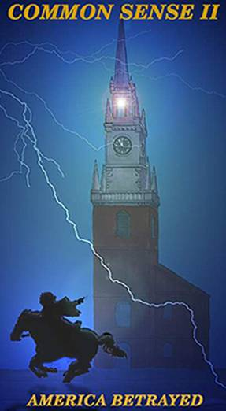

|
 |
“A nation can survive its fools and even the ambitious. But it cannot survive treason from within. An enemy at the gate is less formidable, for he is known and carries his banners openly against the city. But the traitor moves among those within the gates freely, his sly whispers rustling through all the alleys, heard in the very halls of government itself. For the traitor appears not a traitor; he speaks in the accents familiar to his victims, and he wears their face and their garments, and he appeals to the baseness that lies deep in the hearts of all men. He rots the soul of a nation; he works secretly and unknown in the night to undermine the pillars of a city; he infects the body politic so that it can no longer resist. A murderer is less to be feared.” “If everyone enjoyed the unrestricted use of his faculties and the free disposition of the fruits of his labor, social progress would be ceaseless, uninterrupted and unfailing. But there is another tendency that is common among people. When they can, they wish to live and prosper at the expense of others. The annals of history bear witness to the truth of it: The incessant wars, mass migrations, religious persecutions, universal slavery, dishonesty in commerce, and monopolies. This fatal desire has its origin in the very nature of man...in that primitive, universal and insuppressible instinct that impels him to satisfy his desires with the least possible pain.” |
On January 10, 1776 a pamphlet entitled “Common Sense” was anonymously
published in Philadelphia. Written by Thomas Paine, Common Sense logically argued
the reasons why the American colonists should govern themselves rather than
be ruled by a monarch who sits some 3,000 miles and three months travel time
away.
Paine’s little booklet sold 500,000 copies in the country when the population
was 2,500,000, or one copy to every five persons.
Officers read Common Sense to their soldiers, teachers to their classes, parsons
to their congregations. George Washington was endorsing its “sound doctrine
and unanswerable reasoning.”
Thomas Paine contributed as much with his pen as Washington with his sword to
the creation of this Republic. The reason his little book was so successful
was because “it made sense,” appealing to the person on the street.
Common Sense II, inspired by Paine’s pamphlet, is intended to arouse the
insight and spirit of the true nature of our form of government . . . of freedom.
One hundred copies of this booklet passed out can become 1,000. One thousand
can become 10,000 and10,000 can become 10,000,000. To duplicate the effect that
Paine’s Common Sense had on the American people in 1776 would require
the distribution of 56,000,000 copies of Common Sense II.
The American people are the foundation of our concept of government. The strength
of that foundation is dependent upon our knowledge and applied common sense.
Cover
The signal lantern of Paul Revere displayed in the steeple of the North Church,
Boston, Massachusetts, warned the country of the march of the British troops
to Lexington and Concord on April 19, 1775.
Second Printing October, 2002
Contents
Chapter I
A Sovereign Nation-State Republic . . . . 1
Republic v Democracy . . . . . . . . . . . . 3
Our Right to Be Secure In Our Home . . . . 5
County Government is the Building
Block of Our Political System . . . . . . . 9
Colorado’s Federal Mandate Act . . . . . . 10
Arresting Power of the Sheriff . . . . . . 13
The Purpose of the Jury System . . . . . 15
Chapter II
Destruction of Our Form of Govt. . . . . 17
Machiavellian Politics . . . . . . . . . . . 17
Three Types of Conquest . . . . . . . . . . 20
Walls in Our Minds . . . . . . . . . . . . . . . 21
Newspaper Control in America . . . . . . 24
Money and Gold . . . . . . . . . . . . . . . . . 29
Interest/Usury . . . . . . . . . . . . . . . . . 35
Chapter III
IRS and the Federal Reserve . . . . . . . . 39
NAFTA/GATT . . . . . . . . . . . . . . . . . . . . 42
Environmental Laws That Over-
Regulate Small Business . . . . . . . . . . . 43
CAFRs . . . . . . . . . . . . . . . . . . . . . . . . 47
Chapter IV
Wars Do Not “Just” Happen . . . . . . . . 50
Are We in a Police State? . . . . . . . . . . 52
Illegal Immigration . . . . . . . . . . . . . . 53
Secret Experiments . . . . . . . . . . . . . 54
Conspiracy Theories . . . . . . . . . . . . . 57
Chapter V
Sovereignty and Jurisdiction of Rights . . . 59
Life Terms of Supreme Court Justices . . 63
The Missing 13th Amendment . . . . . . . 65
The Rule of Law Today . . . . . . . . . . 67
Chapter VI
Declaration of Violations to the
Constitution . . . . . . . . . . . . . . . . 72
Address to the People/Public Officials . . 79
Dear County Commission/Sheriff . . . . 81
Sample Petition . . . . . . . . . . . . . . . . . 83
Index to the Constitution . . . . . . . . . . 85
Forward
What is really happening in America and the world today? Dedicated individuals
have been asking the same questions and researching the answers. This booklet
is a modest compilation of some of this work. It has been organized in such
a manner as to answer some of the most perplexing questions of our times.
Americans have grown up believing that they live in the best and freest nation
in world history. However, closer inspection proves that the U.S. government
has been secretly stealing freedom from the American people for decades. Challenging
government usurpation of our inalienable rights in government courts reveal
an entirely different authority than what we were taught to believe exists in
America.
This booklet shows how our form of government was designed to function and how
it functions today. It also describes how certain organizations and individuals
have taken control of our constitutional republic. These individuals and organizations
have managed to reverse the constitutionally intended order of sovereign citizens
as masters of government servants.
The analyses within this booklet are from the best available information to
date. The issues proposed are stated in general terms so that lines of logic
and common sense are able to become clear; it is intended to inspire further
thought and research.
Though the forces aligned against the common man may seem overwhelming, centuries
of fraud and deceit through freedom-violating unconstitutional acts of Congress
could be repealed with the simple stroke of a constitutional pen.
Please research for yourself anything in this booklet that you cannot accept.
Our only desire is to see the foundations of our country restored and secured
to their proper standing; that the sovereign state citizens of our nation be
reinstated as masters of government servants.
Chapter I
A
Sovereign Nation-State Republic
Throughout the early history of civilized mankind, the common man had been ruled
primarily by king-monarch/feudal-slave forms of government.
Some historians have described the Renaissance of 15th century Europe as the
period of transition between the Middle Ages and the modern era. During this
period the feudal and ecclesiastical elements of the medieval world were gradually
but steadily transformed, first in Italy, then in the rest of Europe, by the
development of capitalism and urban societies.
Knowledge that the Middle Ages was a period of achievement has increased in
recent times. So has an awareness that the Renaissance did not emerge suddenly
out of medieval darkness, but from the fruit of a long, complicated process
that involved the technical ingenuity and intellectual thought of several European
peoples.
For example, the development of printing with movable metal type around mid-15th
century Germany, amounted to a communications revolution on the order of the
invention of writing, yet this invention was the result of work from the development
of previous inventions.
The Reformation of the 16th century had an enormous impact upon the quantity
and quality of literary output. Without the printing press, it would have been
impossible for the Reformation to have ever occurred. As with printing, geographical
discovery was also the fruit of a long, complicated process. Navigational instruments
derived from the Arabs, astronomical tables and sea charts drawn up by Hispanic
and North African Jews, square-rigged ships designed by Spaniards and sailed
by Italian mariners, were critical to European conquest during the age of exploration.
Thus, the Renaissance of the 15th century provided the environment that led
to an explosion in technological development, creativity and voyages of discovery,
being the bridge between the Dark Ages and the Industrial Revolution.
Under these conditions, people in England and elsewhere, established colonies
in North America. Once the colonies became established and self supporting they
united to free themselves from British tyranny.
After we won the Revolutionary War our Founding Fathers put into writing a new
concept of government. During its development they took into consideration the
successes and failures of governments throughout history. In their wisdom they
settled upon a republic that identified the common man as the sovereign and
government as the servant. The concept of people as masters of government servants
is the basis of our unique and, at that time, unprecedented form of governance.
The key to this concept was the idea that man as an individual is a political
being; that it is his nature to participate in public life and to interact with
one’s fellowmen in making decisions; that individualism has profound implications
for man’s intellectual and social existence.
The best setting for this social order was the republican form of government
in which no one had a monopoly of power and citizens were devoted to the welfare
and service of the community.
Thus, for those Founding Fathers who were seeking true sovereignty and freedom
for the individual, statecraft was a discipline based on timeless rules or laws.
And from this came our Constitution for the United States of America, as a sovereign
nation-state republic.
“The cause of America is, in great measure, the cause of all mankind.”
~Thomas Paine
Republic v Democracy
In the republican form of government, the power rests in a written constitution,
wherein the powers of the government are limited so that the people retain the
maximum amount of power themselves. In addition to limiting the power of the
government, care is also taken to limit the power of the people to restrict
the rights of both the majority and the minority.
A simple method of illustrating the difference between a democracy and a republic
would be to discuss the basic plot to the classic grade B western movie.
In this plot, one that the moviegoer has probably seen a hundred times, the
brutal villain rides into town and guns down the unobtrusive town merchant by
provoking him into a gunfight. The sheriff hears the gunshot and enters the
scene. He asks the assembled crowd what had happened, and they relate the story.
The sheriff then takes the villain into custody and removes him to the city
jail.
Back at the scene of the shooting, usually in a tavern, an individual stands
up on a table (this individual by definition is a demagogue) and exhorts the
crowd to take the law into its own hands and lynch the villain. The group decides
that this is the course of action that they should take (notice that the group
now becomes a democracy where the majority rules) and down the street they (now
called a mob) go. They reach the jail and demand that the villain be released
to their custody. The mob has spoken by majority vote: the villain must hang.
The sheriff appears before the democracy and explains that the villain has the
right to a trial by jury. The demagogue counters by explaining that the majority
has spoken: the villain must hang. The sheriff explains that his function is
to protect the rights of the individual, be he innocent or guilty, until that
individual has the opportunity to defend himself in a court of law. The sheriff
continues by explaining that the will of the majority cannot deny this individual
that right. The demagogue continues to exhort the democracy to lynch the villain,
but if the sheriff is persuasive and convinces the democracy that he exists
to protect their rights as well, the scene should end as the people leave, convinced
of the merits of the arguments of the sheriff.
The republican form of government has triumphed over the democratic form of
mob action.
In summary, the sheriff represents the republic, the demagogue the control of
the democracy, and the mob the democracy. The republic recognizes that man has
certain inalienable rights and that government is created to protect those rights,
even from the acts of a majority. Notice that the republic must be persuasive
in front of the democracy and that the republic will only continue to exist
as long as the people recognize the importance and validity of the concept.
Should the people wish to overthrow the republic and the sheriff, they certainly
have the power (but not the right) to do so.
But the persuasive nature of the republic’s arguments should convince
the mob that it is the preferable form of government.
~A. Ralph Epperson
The Unseen Hand
Our
Right To Be Secure
In Our Home
Is Inherent, Inalienable
Most of us have heard of Samuel Adams from America’s revolutionary era.
He was a second cousin to President John Adams and the primary agitator that
stirred people’s minds and hearts from Boston to Williamsburg. Adams’
agitations were directly responsible for the social conditions that allowed
the Revolutionary War to be fought and won.. Loyalists and the British called
Adams, John Hancock, Paul Revere, John Adams, Thomas Jefferson, George Washington
and the other great men to which we proudly refer as our Founding Fathers, “radicals.”
How many remember a man named James Otis from our history lessons?
James Otis was one of Massachusetts’ most brilliant lawyers in the 1760s.
Otis brought about a profound change in Samuel Adams’ philosophical views
during a trial in February, 1761. In the name of 63 Boston businessmen, he challenged
the authority of what were called Writs of Assistance. Beginning in the 1660s
these writs were used by British customs officials to catch smugglers and search
for contraband. However, the writs had no expiration date and by the 1760s,
British agents enjoyed unbounded authority to go anywhere, search anything and
break down any door. Otis observed that the Writs were being executed with the
help of Governor Bernard of Massachusetts, who by law received a rake-off of
one-third from each auction of impounded property, consequently fingering a
fortune.
During the trial, Otis argued that not even Parliament could abrogate the rights
of private property or the home of any Englishman, be he even the lowliest,
most humble fisherman. What was at stake was the right of a man to his life,
to his liberty, and to his property. “This writ is against the fundamental
principles of English law!” he asserted. “The lowliest man should
be as safe in his home as a prince in his castle...safe from kings, safe from
Parliament. The kind of power, the exercise of which, in former periods of English
history cost one king of England his head and another his throne,” Otis
said, referring to Charles I and James II. In finishing, Otis emphasized the
simple argument that was to haunt relations between England and the colonies
for the next 15 years: “An act against the constitution is void. An act
against natural equity is void.”
Otis spoke hypnotically without a break for more than four hours and lawyers
present at the trial talked of that day for the rest of their lives. Sam Adams
could recite his words with great emotion. “A law contrary to the Constitution
is void. Man’s right to liberty and property is inherent, inalienable.
Man’s right to freedom is higher than the state’s right to collect
revenue.”
These were some of the true issues that led to the Revolution. Taxation without
representation was an issue that followed later. A constitution for the States
of America would not be ratified for another 30 years after James Otis made
his presentation in 1761.
The present war on terrorism seems to resonate with these same issues with which
our forefathers struggled, allowing the excuse for increased search and seizure
laws that violate our constitutional rights.
Our 4th amendment right states:
The right of the people to be secure in their persons, houses, papers and effects,
against unreasonable searches and seizures, shall not be violated, and no warrants
shall issue but upon probable cause supported by oath or affirmation, and particularly
describing the place to be searched, and the persons or things to be seized.
A Law Contrary To The
Constitution Is Void
The general misconception is that a statute passed by legislators bearing the appearance of law constitutes the law of the land. The U.S. Constitution is the supreme law of the land and any statute, to be valid, must be in agreement.
Constitutional Law 16 Am Jur 2d
Effect of Totally or Partially1. Total Unconstitutionality
Unconstitutional Statutes
County Government Is The Building Block Of The American Political System
The Constitution for the United States of America is a concept of “Power
to the People” and is uniquely American. When the necessary number of
the original thirteen colonies ratified the United States Constitution, they
established a government in which political power was decentralized. By constitutional
contract they surrendered to the federal government only specified powers. Powers
not delegated to the federal government were reserved to the States and to the
People respectively. Rather than to permit such a logical conclusion from being
misunderstood, the 10th amendment so specified that intent. Under this concept
of government power is concentrated at the level closest to the People and most
responsive to the desires and wishes of the individual.
County government is the building block that forms the basis for this concept
of governance and the sheriff, county commissioner and county judge, elected
by “the People,” are the local chieftains in the proper functioning
of our government.
Our locally-controlled and accountable county governments no longer function
properly. This critical building block of the American political system has
crumbled under the weight of federal funding that binds our counties to federal
mandates. This federal involvement in county business is directly linked to
the ever-increasing regulations that are destroying our livelihoods and way
of life.
Public officials insist that we must have this federal funding for our roads
and other infrastructure needs. If this continues we will no longer have infrastructure
needs as we will one day find ourselves regulated out of existence!
If our counties were not bound to economically destructive regulations through
acceptance of federal funding, economic opportunity would be greatly enhanced.
There would be no need for federal funds. Free of unreasonable federal regulations,
industry and jobs will be attracted to our counties and existing business would
be able to thrive just like they did before federal encroachment began crumbling
the county building block.
Colorado’s Federal Mandate Act Amends State Code
In 1994 Colorado passed both a Resolution and a Federal Mandate Act challenging
federal authority. It was signed by the Governor and approved by both the Colorado
House and Senate.
Colorado House Joint Resolution 94-1035 reads in part:
Whereas, The 10th Amendment to the Constitution of the United States reads as
follows: “The powers not delegated to the United States by the Constitution,
nor prohibited by it to the States, are reserved to the States respectively,
or to the people;” and
Whereas, The 10th Amendment defines the total scope of federal power as being
that specifically granted by the United States Constitution and no more; and
Whereas, The scope of power defined by the 10th Amendment means that the federal
government was created by the states specifically to be an agent of the states;
and
Whereas, Today, in 1994, the states are in fact treated as agents of the federal
government; and
Whereas, Many federal mandates are directly in violation of the 10th Amendment
to the Constitution of the United States; and
Whereas, The United States Supreme Court has ruled in New York v United States,
112 S. Ct. 2408 (1992), that Congress may not simply commandeer the legislative
and regulatory processes of the states; now, therefore,
Be it Resolved by the House of Representatives of the Fifty-ninth General Assembly
of the State of Colorado, the Senate concurring herein:
(1) That the State of Colorado hereby claims sovereignty under the 10th Amendment
to the Constitution of the United States over all powers not otherwise enumerated
and granted to the federal government by the United States Constitution.
(2) That this serve as a Notice and Demand to the federal government, as our
agent, to cease and desist, effective immediately, mandates that are beyond
the scope of its constitutionally delegated powers. [end quote]
Colorado’s
Federal Mandate Act (Article 78) amends Colorado state code and reads in part
as follows:
24-78-102 Legislative declaration.
(1)(a) In enacting this Article, the General Assembly employs its legislative
authority to establish that the people of the State of Colorado, acting through
their elected officials in Colorado State Government, have the responsibility
and authority to establish policy in and for Colorado pertaining to Federal
programs mandated in Federal Statutes.
(1)(c)(II) Any implementation of Federal Policies in and for Colorado by Federal
Executive Branch agencies that is contrary to fundamental notions of federalism
and self-determination must be identified and countered.
(2)(c) The Tenth Amendment of the United States Constitution directs that powers
that are not delegated to the United States are reserved to the states or to
the people. Colorado, as one of the sovereign states within the union, has constitutional
authority to enact laws protecting the environment of the state and safeguarding
the public health, safety, and welfare of the citizens of Colorado. However,
this authority has too often been ignored by the Federal Government, as the
Federal Government has intruded more and more into areas that must be left to
the states. It is essential that the dilution of the authority of the state
and local governments be halted and that the provisions of the Tenth Amendment
be accorded proper respect.
(2)(d) Current Federal Regulatory Mandates, as reflected in Federal Administrative
Regulations, guidelines, and policies, often do not reflect the realities of
the Rocky Mountain Region, and Federal Regulators frequently do not understand
the needs and priorities of the citizens of Colorado. [end quote]
Note: Passage of Colorado’s 10th Amendment Resolution legitimizes concerns
that federal encroachment into states rights are destroying our form of government.
Though a step in the right direction, the Colorado resolution, at the state
level, is yet too far removed from the People. Similar resolutions must be passed
at the county level to reinstate the form of governance envisioned by our Founders.
Some say the Constitution is outdated. We ask what part that may be? Is it the part protecting our right of free speech, of religion, the press? Or is it the 4th Amendment that allows us to be secure in our homes? Perhaps it may be the part providing the right to trial by jury? It would certainly have to be the 2nd Amendment, allowing the People the right to bear arms as a last defense against tyranny in government.
Do Federal Agents Have Arresting Power Without The County Sheriff?
It is only through the county sheriff that an outside agency is permitted to
exercise its authority.. The sheriff is the only “chief executive”
in his county who has arresting power. Properly executed, the sheriff’s
authority can have an immediate effect in bringing federal agencies and public
officials to obey the law. The sheriff presents the greatest challenge to the
misuse of authority by a central government. However, we have already seen how
the use of federal funding obligates county governments to federal mandates.
Those mandates are used to justify federal intrusion into the lives of county
residents. It is apparent that the trend for the last several years has been
in the direction of removing power from the hands of the People at the State
and local level and concentrating more and more power over people into the hands
of unelected bureaucrats at the federal level.
International bodies are also vehicles being used to erode “People Power”
at the local level and circumvent the Constitution. Currently we are seeing
federal agencies surrender unconstitutionally-usurped state powers to international
bodies such as the United Nations and theWorld Trade Organization.
We the People who elected these officials must demand accountability from them
and confront them as to where their loyalties lie. “We” elected
them to work for “Us,” and protect “Us” when federal
agencies exceed their delegated authority. We did not elect them to conform
to the edicts of federal or international bodies. We must exercise “people
power” to support and compel them to do their jobs.
Our only recourse to stop the destruction of our constitutional republic is
through local government.
The
Power and Purpose
of Our Jury System
Jury nullification of law was built into our form of government
to make sure that laws must pass the test of popular authority before being
enforced. The Constitution provides five separate tribunals with veto power—the
House of Representatives, the Senate, the executive agencies, the judiciary
and the jury. Each enactment of law must pass muster in all five bodies before
it gains the authority to punish those who choose to violate it. Thomas Jefferson
said, “I consider trial by jury as the only anchor yet imagined by man,
by which a government can be held to the principles of its constitution.”
Before our jury system devolved to what we have today, juries had the right
to judge both “the law itself” as well as the facts. Our country’s
first Chief Justice of the U.S. Supreme Court, John Jay, is quoted saying exactly
that in 1789. Also, U.S. Supreme Court Justice Samuel Chase, 1796, and Oliver
Wendell Holmes, 1902, are quoted saying the same words. The Jury has the power
to judge both the law and the facts. Harlan F. Stone, 12th U.S. Supreme Court
Justice, 1941, said, “The law itself is on trial quite as much as the
cause which is to be decided.” In State of Georgia v Brailsford, et al,
the finding was, “You have a right to take upon yourselves to judge of
both, and to determine the law as well as the fact in controversy.”
Almost every jury in the country today is falsely instructed by judges when
they are told they must accept as the law that which is given to them by the
court and that the jury can decide only the facts of the case. If people acting
in the name of government are permitted by juries to dictate any law whatever
and to dictate what evidence is admissible or inadmissible (which is generally
conviction-oriented evidence) then the whole truth is prevented from being considered
and the issue of fact becomes virtually irrelevant.
Part of the problem lies with the general misconception that any statute passed
by legislators bearing the appearance of law constitutes the law of the land.
The U.S. Constitution is the supreme law of the land, and any statute, to be
valid, must be in agreement. It is impossible for a law which violates the Constitution
to be valid. Congress can legislate (make law), the president or some other
bureaucrat can make an order or issue regulations, and judges may instruct or
make a decision, but no juror can ever be punished for voting “Not Guilty.”
Any juror can choose to disregard the instructions of any judge or attorney
in rendering their vote. Thus, those acting in the name of government must come
before the common man to get permission to enforce a law.
Common sense should tell us that without the power to decide what facts, law
and evidence are applicable, juries cannot be a protection to the accused and
true justice is denied, leaving us with trial by government and not trial by
jury.
Paraphrasing George Washington:
Government is like fire. We bring it into our homes to keep us warm, but we build a chimney to keep the fire from consuming us. The Constitution is the chimney that keeps government from consuming us. Has the chimney collapsed, and is our constitutional house on fire?
Chapter II
The Destruction of Our
Constitutional Republic
In Chapter I the proper structure of constitutional government was explained with the county being identified as the building block of our Constitutional Republic. Within that context it was illustrated how outside influences have crept in to crumble the building blocks of our government of, by and for the people. In this chapter we will take a look at the philosophies of conquest and the methods being used to destroy our Constitutional Republic.
Machiavellian Politics
Over 400 years ago, the Florentine statesman Niccolo Machiavelli engaged in
a profound study of methods used by various rulers to attain power. He lived
in an age when nations were small, in some cases only walled cities, when events
were moving fast and when many men were struggling for power. Due to his own
confidential government position, he was able to evaluate the methods of those
who succeeded and to observe the mistakes of those who failed. In “The
Prince” he reduces his conclusions to definite rules or doctrines. His
conclusions, in general, appear to find support in the Dante’s DeMonarchia—written
two hundred years before “The Prince.”
The findings of Machiavelli and other students of power decree that to obtain
power it is essential to ignore the moral laws of man and of God; that promises
must be made only with the intention to deceive and to mislead others to sacrifice
their own interests; that the most brutal atrocity must be committed as a matter
of mere convenience; that friends or allies must be betrayed as matter of course
as soon as they have served their purpose. But, it is also decreed that these
atrocities must be kept hidden from the common people except only where they
are of use to strike terror into the hearts of opponents; that there must be
kept up a spurious aspect of benevolence and benefit for the greater number
of the people, and even an aspect of humility to gain as much help as possible.
It is held that the vast mass of the people are oblivious and gullible, and
therefore will believe a lie which is repeated again and again, regardless of
how obvious may be the fundamental facts to the contrary. But, in Chapter VI
of “The Prince” is decreed also: “. . . matters should be
so ordered that when men no longer believe of their own accord, they may be
compelled to believe by force.”
It is obvious that in the early stages of the usurpation of power in any land
of even partial democracy, opposition is certain to arise, and that an attempt
to suppress this antagonism by arbitrary means would quickly inflame and solidify
the opponents into an overwhelming attack. Machiavelli considered this aspect
and indicated the correct method to neutralize this danger in stating: “Many
consider, that a wise prince, when he has the opportunity, ought with craft
to foster some animosity against himself, so that, having crushed it, his renown
may rise higher.”
This indicates the technique of modern Machiavellians in having their own stalking
horses grasp the leadership of their opponents, and then as their own veiled
and hidden action is gradually unfolded, have their Pied Pipers oppose them
on spurious and superficial reasons in such a way as to obscure and conceal
as far as possible the real reasons and objectives; thereby confusing and confounding
the real opponents and leading them into a swamp of futility. War, according
to Machiavelli, must be applied at almost regular intervals to maintain power.
It is held that it is not a passing madness, but that it is a normal and indispensable
tool of power. It must be applied promptly and ruthlessly to be effective in
its function of maintaining and extending power. Machiavelli very urgently warned
against any alliance with a more powerful friend, and counseled that in cases
where this was unavoidable, the stronger friend must be regarded as a certain
potential enemy who must be undermined and destroyed as soon as circumstances
permit with the aid of the common enemy and of weaker friends.
~E.C. Knuth
“The Empire of “The City”
Note: These philosophies and tactics are historically well known among the
ruling class. Events unfolding before us today begin to make sense when these
methods are considered.
Three Types Of Conquest
History reveals nations can be conquered by the use of one or more of three
methods.
The most common is conquest by war. In time, though, this method usually fails,
because the captives hate the captors and rise-up and drive them out if they
can. Much force is needed to maintain control, making it expensive for the conquering
nation.
A second method is by religion, where men are convinced they must give their
captors part of their earnings as “obedience to God.” Such a captivity
is vulnerable to philosophical exposure or by overthrow by armed force since
religion, by its nature, lacks military force to regain control once its captives
become disillusioned.
The third method can be called economic conquest. It takes place when nations
are placed under “tribute” without the use of visible force or coercion,
so that the victims do not realize they have been conquered. “Tribute”
is collected from them in the form of “legal” debts and taxes, and
they believe they are paying it for their own good, for the good of others,
or to protect all from some enemy. Their captors become their “benefactors”
and “protectors.”
Although this is the slowest to impose, it is often quite long-lasting, as the
captives do not see any military force arrayed against them, their religion
is left more or less intact, they have freedom to speak and to travel, and they
participate in “elections” for their rulers. Without realizing it,
they are conquered, and the instruments of their own society are used to transfer
its wealth to the captors and make the conquest complete.
~Pastor Sheldon Emry
Billions for the Bankers
and Debts for the People
What is accomplished in open warfare, destroying a nation’s infrastructure,
has been accomplished today in America, without firing a shot.
Walls In Our Minds
Mankind was created with a capacity to learn, think, reason and create. We
are born with a brain which begins to accumulate information within a few weeks
after birth. From age five, most children are exposed to a politician-controlled
government school system that continues for 13 years. The child’s brain
is a captive of mankind’s worst enemy on planet earth. Governments have
destroyed more property, confiscated more wealth and ordered the murder of more
men, woman and children than any other enemy. Government cannot be trusted with
the minds of our children.
When we consider how the mind of a five year-old is so vulnerable to manipulation,
it should cause parents and grandparents great concern. Some third world countries
still hear the chant of the witch doctor as he manipulates the minds of his
fellow tribesmen. We think we are too intelligent to be manipulated. Mind manipulation
is alive and well in educated America. At no time in our government schools
or government churches do we find lessons being taught on the difference between
knowing and believing. Our teachers teach what they believed when they went
to school.
We have thousands of religious creeds, cults and denominations, all competing
for believers. Preachers have become salesmen of religion. The quality of the
product is not as important as the dollars collected and the number of followers.
Our churches should recognize the danger of being manipulated by believing false
information. When government began its takeover of the education system, the
church should have opposed the idea. The church has not been a separate power
acting as a check against evil government.
If someone complains about how our government is conducting its business, most
Americans will agree that something must be done. However, if you refuse to
pay federal income tax, you will be accused of being unpatriotic. People will
complain about government, but they don’t want anyone to cut off government’s
income. The basic reason for this is mind control. Walls have been built in
the minds of the American people that limits the ability to think and reason.
The government school did not teach that government is mans worst enemy. That
is a fact that any free mind can comprehend.
During World War II, we were taught how our government was better than the German
or Japanese governments. After the war, we were taught how our government was
better than what the Russians had. The Russian government controls the schools
in Russia. The teachers in Russian schools are teaching children that the Russian
government is better than the United States government. It would appear that
teachers in the USSR and teachers in the USA have a real problem. Somebody is
teaching false information and that somebody is teachers on both sides. Government
schools in the USSR and in the USA are both in error. An argument as to which
government is the best is like comparing AIDS and cancer. You might prefer cancer
over AIDS, but you really don’t want either one. If you have two rotten
oranges, you will throw both of them into the garbage. Logic tells us not to
trust government with the education of our children.
We have been going to the polls on election day as good little brainwashed Americans
and usually voted against someone, rather than for someone. You tried to decide
which one was AIDS and which one was cancer. You tried to determine which orange
was more rotten than the other. You went away from the polls frustrated. The
lesser of two evils may be elected, but the changes you would like to see are
not going to happen. Every law that is created will be designed to give politicians
and government more of your money, power, liberty and freedom.
~M.J. ‘Red’ Beckman
Walls In Our Minds
A lie and the liar are not
dangerous until the lie is believed.
The walls in our minds and a nation of government regulators “just doing their job,” are powerful forces that have allowed tyrants to conquer this great nation.
Newspaper Control
In America
One of the more widely recognized virtues of the American way of life has been
its “official” national philosophy, as set forth in the First Amendment
of the Constitution, that “Congress shall make no law...abridging the
freedom of speech, or of the press...” Throughout America’s history
an independent and competitive press has been regarded as essential to the effective
maintenance of her republican form of government. It was the press’ responsibility
to provide factually the news and information necessary for the maintenance
of a conscious and alert citizenry.
The American press of today is a far cry from that which existed in the days
of Benjamin Franklin and Thomas Paine. The technological advances which the
newspaper industry has undergone in the last century have been profound. Today
the size, material quality, and format of newspapers, as well as the ability
to provide a metropolitan area containing hundreds of thousands of readers with
several editions a day, would certainly amaze the Founding Fathers. Yet, despite
this advance in newspaper technology, they would probably be shocked by the
growing monopolistic centralization of American newspapers and disgusted by
the kind of managed news which is being presented to the American people.
In the 1790 until 1798 Benjamin Franklin Bache was the editor of The Philadelphia
Aurora—an opposition newspaper that published weekly counterpoints to
the pro-government-no-matter-what Porcupine’s Gazette. By the Civil War,
big newspapers such as the New York Times were fully cooperative with the interests
of government through their editorial policies. The prevalence of pro-government
newspaper publishing by the 1880s was memorialized one night when preeminent
New York journalist John Swinton was the guest of honor at a banquet given him
by his peers. Swinton was managing editor of the New York Times during the Civil
War, later becoming a crusading journalist in the movement for social and labor
reform.
A toast was offered to the independent press and Swinton later outraged his
colleagues when he said the following:.
“There is no such thing, at this date of the world’s history, in
America, as an independent press. You know it and I know it.
“There is not one of you who dares to write your honest opinions, and
if you did, you know beforehand that it would never appear in print. I am paid
weekly for keeping my honest opinion out of the paper I am connected with. Others
of you are paid similar salaries for similar things, and any of you who would
be so foolish as to write honest opinions would be out on the streets looking
for another job. If I allowed my honest opinions to appear in one issue of my
paper, before twenty-four hours my occupation would be gone.
“The business of the journalists is to destroy the truth, to lie outright,
to pervert, to vilify, to fawn at the feet of mammon, and to sell his country
and his race for his daily bread. You know it and I know it, and what folly
is this toasting an independent press?
“We are the tools and vassals of rich men behind the scenes. We are the
jumping jacks, they pull the strings and we dance. Our talents, our possibilities
and our lives are all the property of other men. We are intellectual prostitutes.”
Today, influential minorities which constitute two percent or less of the total
U.S. population have effectively achieved dominion over America’s newspaper
industry. The intense consolidation of newspapers into monopolies has resulted
in the American public being offered only biased and censored news. We have
an entry from Congressional Record that pinpoints the day controlled media and
big government were engaged to be formally wed.
On February 9, 1917 the following statement was entered into the Congressional
Record of the Sixty-Fourth Congress by a member of the [defense appropriations]
committee:
Mr. Callaway: Mr. Chairman, under unanimous consent, I insert into the Record
at this point a statement showing the newspaper combination, which explains
their activity in the war matter, just discussed by the gentleman from Pennsylvania
[Mr. Moore]:
In March, 1915, the J.P. Morgan interests, the steel, ship building and powder
interests and their subsidiary organizations, got together 12 men high up in
the newspaper world and employed them to select the most influential newspapers
in the United States and sufficient number of them to control generally the
policy of the daily press in the United States.
“These 12 men worked the problems out by selecting 179 newspapers, and
then began, by an elimination process, to retain only those necessary for the
purpose of controlling the general policy of the daily press throughout the
country. They found it was only necessary to purchase the control of 25 of the
greatest papers. The 25 papers were agreed upon; emissaries were sent to purchase
the policy, national and international, of these papers; an agreement was reached;
the policy of the papers was bought, to be paid for by the month; an editor
was furnished for each paper to properly supervise and edit information regarding
the questions of preparedness, militarism, financial policies and other things
of national and international nature considered vital to the interests of the
purchasers.
“This contract is in existence at the present time, and it accounts for
the news columns of the daily press of the country being filled with all sorts
of preparedness arguments and misrepresentations as to the present condition
of the United States Army and Navy, and the possibility of the United States
being attacked by foreign foes.
“This policy also included the suppression of everything in opposition
to the wishes of the interests served. The effectiveness of this scheme has
been conclusively demonstrated by the character of the stuff carried in the
daily press throughout the country since March, 1915. They have resorted to
anything necessary to commercialize public sentiment and sandbag the National
Congress into making extravagant and wasteful appropriations for the Army and
Navy under false pretense that it was necessary. Their stock argument is that
it is ‘patriotism.’ They are playing on every prejudice and passion
of the American people.” [end quote]
The disproportionately powerful political and economic control of the news media
has allowed them to choose presidential candidates, swing elections, control
foreign and domestic policy, and determine generally what is to be acceptable
in every aspect of American culture. They do this by screening and selecting
the items to be presented, by the way these items are presented, the emphasis
and treatment accorded them, the headlines and pictures used, the typography
and format employed in the writing and pictorial representations. News is played
up and played down, dramatized, repeated, juxtaposed, spelled out, underscored,
even falsehoods, to enhance its influence in the desired directions.
A nation is only as strong as its institutions, and, as an institution, journalism
in America has ceased to serve the vital interests of the American People.
The media and the government like to put labels on people who talk about, or refer to, the Constitution as conspiracy nuts; anti-government, skin headed white supremacists. This shows a clear example of brainwashing to make people think black is white and up is down. They call some of us constitutionalists or patriots as if they were bad things, but . . . isn’t that what we “all” should be?
Money and Gold
The Bible teaches that the love of money is the root of all evil. Money by
itself is not the root. It is the love of money, defined as greed, that motivates
certain members of society to acquire money.
It becomes important, then, for the members of the middle class to understand
what money is and how it works. Money is defined as: “anything that people
will accept in exchange for goods or services in a belief that they may in turn
exchange it for other goods and services.”
Money becomes a Capital Good. It is used to acquire Consumption Goods (and other
Capital Goods as well.) Money also becomes a method of work avoidance. Money
can work for its possessor: “When money is put to work, it works twenty-four
hours a day, seven days a week, three hundred and sixty five days a year, and
stops for no holidays.”
So the desire to acquire money to reduce a need to work becomes the motive of
many individuals in the society.
The first man was self-sufficient. He produced what he wanted and stored what
he needed for those times when he was unable to produce. He had no need for
money until other humans appeared and joined him in the acquisition of Consumption
Goods. As populations grew, specialization grew, and certain individuals produced
Capital Goods instead of Consumption Goods. Man soon discovered that he needed
something as a store of value to enable him to purchase Capital Goods when he
was not producing Consumption Goods.
Durable commodities, those that didn’t spoil with the passage of time,
slowly became that store of value, and in time the most durable, a metal, became
the money of society. The ultimate metal, gold, became the final store of value
for a variety of reasons.
But as the producer of gold saw the need to set this money aside for future
use, problems arose as to how and where it should be stored. Since gold had
a high value in what it could purchase in both Capital Goods and Consumption
Goods, it became a temptation to those who were willing to take it from the
owner by force. This led the owner of gold to take means to safeguard his holdings.
Certain individuals, already experienced in the storage of non-durable goods,
wheat for instance, soon became the storage facility for gold as well.
These warehouses would take the gold and issue the gold owner a warehouse receipt,
certifying that the owner had a given quantity of gold in storage at the warehouse.
These gold receipts could be transferred from one person to another, usually
by writing on the back of the receipt that the owner was transferring his claim
on the gold in the warehouse to another person. These receipts soon became money
themselves as men accepted the receipts rather than the gold they represented.
Since gold is scarce and the quantity is limited, it was impossible to make
counterfeit money. It was only when the warehouseman realized that he could
issue more gold receipts than there was gold in the warehouse that he could
become a counterfeiter. He had the ability to inflate the money supply, and
the warehouseman frequently did this. But this activity only acted temporarily
because as the quantity of gold receipts in circulation increased, because of
the economic law known as inflation, the prices would rise. The receipt holders
would start to lose confidence in their receipts and return to the warehouseman
to claim their gold. When more receipt holders showed up than there is gold
in the warehouse, it is called a “run,” and is caused because the
people have lost faith in their paper money and have demanded that the society
return to the gold standard where gold becomes the money supply.
The people’s check on the warehouseman, i.e. their ability to keep the
warehouseman honest by constantly being able to redeem their gold receipts,
acted as a restraint to the inflation of the gold supply. This limited the greed
of the counterfeiters and forced them into looking for alternative methods of
increasing their wealth. The next step was for the counterfeiter to ask the
government to make the gold receipts “Legal Tender” and also prohibit
the receipt holder from redeeming the receipt into gold. This made the paper
receipt the only money able to be circulated. Gold could no longer be used as
money.
But this posed an additional problem for the counterfeiter. He now had to include
the government in his scheme to increase his personal wealth. The greedy leader
of the government, when approached by the counterfeiter with this scheme, often
decided to eliminate the warehouseman altogether and operate the scheme himself.
This was the final problem for the counterfeiter. He had to replace the leader
with someone he felt he could trust and who would not use government to remove
the counterfeiter from the plot. This process was costly and extremely risky,
but the enormity of the long-term wealth that could be accumulated by this method
was worth all the hazards.
In time, the counterfeiters, who became the international bankers of today,
developed a strategy by which they could make certain that the government they
loaned money to did not repudiate the loans through a plan called “Balance
of Power Politics.” This meant that the bankers loaned to two governments
at the same time, affording them the opportunity to play one against the other
as a means of forcing one to pay his debts to the banker. The most successful
tool of insuring compliance with terms of payment was the threat of war: the
banker could always threaten the defaulting government with a war as a means
of forcing it to make their payments. This act of repossessing the nation would
almost always work as the head of government, anxious to keep his seat of power,
would agree to the terms of the original loan, and continue his payments.
The key to using this tool, however, was making certain that both kingdoms were
nearly the same size, so that one nation would not become so powerful that the
threat of a war with a weaker neighboring nation would not be sufficient to
force it into making its payments.
Coin clipping is another method for increasing the wealth, and control of money
by the bankers, in cahoots with government. This is done by calling in all the
gold or silver coins and replacing them with coins made of a more plentiful
metal, such as copper or aluminum. The most recent example of this activity,
called “coin substitution,” occurred during the Johnson administration
when the government replaced silver coins with coins of various metals.
~A. Ralph Epperson
The Unseen Hand
With a basic understanding of how international bankers operate, it is possible
to understand the nature of our recent past and the power the international
bankers gained once they secured control of the money.
Today this has become a very refined art with the warehouseman, the “bankers,”
in cahoots with government. The privately owned Federal Reserve System is the
warehouse for America, operating on an entirely counterfeit system which is
supported only by our blind faith in their “fiat money.” (Paper
money of government issue which is legal tender by fiat or law and does not
represent, nor is it based upon, gold and contains no promise of redemption.)
History has shown that whenever there has been fiat money, tyranny has always
followed.
On a global scale, the international bankers (warehouseman), are loaning their
fiat money (computer entries) to countries such as Brazil and Argentina in exchange
for their natural resources as collateral, then manipulating entire world markets
through inflation or deflation, allowing them to loot the resources of these
countries as the loans come into default—all for nothing more than computer
entries. The same game has “already” been played on the American
People, the farmers in particular, i.e. the depression, bankruptcy in 1933 and
the Social Security Act in 1935, putting the American People and their property
up as collateral to the IMF and World Bank.
“All the perplexities, confusion and distress in America arise not from
defects in our constitution, not from want of honor or virtue, so much as from
downright ignorance of the nature of coin, credit and circulation.”
~John Adams
“Whoever controls the volume of money in any country is absolute master
of all industry and commerce.”
~James Garfield
“History records that the money-changers have used every form of abuse,
intrigue, deceit and violent means possible to maintain their control over governments
by controlling the money and its issuance.”
~James Madison
“I believe that banking institutions are more dangerous than standing
armies and that the issuing power of money should be taken from the banks and
restored to governments to whom it properly belongs.”
~Thomas Jefferson
“If ye love wealth better than liberty, the tranquility of servitude
better than the animating contest of freedom, go home from us in peace. We ask
not your counsels or arms. Crouch down and lick the hands which feed you. May
your chains set lightly upon you, and may posterity forget that ye were our
countryman.”
~Samuel Adams
“Man can live and satisfy his wants only by ceaseless labor; by the ceaseless
application of his faculties to natural resources. This process is the origin
of property.
But it is also true that a man may live and satisfy his wants by seizing and
consuming the products of the labor of others. This process is the origin of
plunder.
Since man is naturally inclined to avoid pain...and since labor is pain in itself...it
follows that men will resort to plunder whenever plunder is easier than work.
History shows this quite clearly. And under these conditions, neither religion
nor morality can stop it.”
~Frederick Bastiat
The Law, 1848
CHAPTER III
THE FEDERAL RESERVE
SYSTEM AND
THE INTERNAL REVENUE
SERVICE
On February 25, 1913, the 16th Amendment to the Constitution was signed into
law, which states that Congress shall have power to lay and collect taxes on
income. However, there is irrefutable evidence that the amendment was not properly
ratified. Thirty-six states must support an amendment before it can be signed
into law and in 1913, only the “appearance” was given to Congress
that this had occurred. In reality no more than four states properly ratified
the amendment and the remainder of the states presented fraudulent documents.
Fraud is defined as being a deception deliberately practiced in order to secure
unfair or unlawful gain. These documents have all been traced and proven to
be fraudulent.
On December 23, 1913, Congress passed the Federal Reserve Act which illegally
transferred Congress’ power to coin money and regulate the value thereof,
to a consortium of private bankers. This was an unconstitutional act in violation
of Article I, Section 8, paragraph 5, Constitution for the United States. Nowhere
does the Constitution authorize Congress to delegate such power.
There is nothing federal about the Federal Reserve System and there is irrefutable
evidence that it is a privately owned corporation whose class A Stockholders
are various international bankers of which, less than half are citizens of the
United States. In place of real, lawful money (gold and silver coin) as legal
tender, the Federal Reserve issues private commercial paper for only the cost
of the paper and ink, then exchanges it for interest bearing United States Bonds
to be repaid in the labor and substance of the American People.
The absolute reason why Congress must control the issuance of our currency is
because congress “cannot” charge interest for the use of what should
be our money. The bankers, however, “can” charge interest for the
use of their unconstitutional paper (fiat) money. Americans should not pay for
the use of “their” money. If the Federal Reserve System were abolished,
their collection agency, the Internal Revenue Service, could likewise be abolished.
The Constitution allows the operation of government to be financed from duties,
imposts and excises, which amounted to approximately $500 billion before NAFTA
was passed. That amount would sufficiently support the functioning of the United
States Government if it were not burdened with an ever increasing bureaucracy.
This act surrendered a power so great that the owners of the Federal Reserve
were capable of creating the depression of the 1930s by withdrawing $80 billion
from circulation of the economy, bankrupting the UNITED STATES OF AMERICA on
June 5, 1933, effectively placing the international bankers in the position
of trustee/creditor of our national assets.
William Jennings Bryan, democratic presidential candidate, 1896, 1900, and 1908,
is quoted saying, “The Federal Reserve Bank, which should have been the
farmers greatest protection, has become his greatest foe. The deflation of the
farmer was a crime deliberately committed.” Congressman Charles A. Lindbergh,
Sr. said of this, “The Federal Reserve Act establishes the most gigantic
trust on earth. When the president signs the bill, the invisible government
by the monetary power will be legalized. The worst legislative crime of the
ages is perpetrated by this bill.” Rep. Louis T. McFadden stated, “We
have in this country one of the most corrupt institutions the world has ever
known. I refer to the Federal Reserve Board and the Federal Reserve Banks. The
Federal Reserve Board has cheated the government of the United States out of
enough money to pay the national debt.”
Most people believe there is a law that states we must file and pay income tax.
This is not true. Neither the IRS nor the Department of Justice have been able
to produce a law that compels us to pay the income tax. This is because the
law does not exist. Americans need to pay income tax only if they choose to
volunteer their payment and the IRS itself states that the tax is voluntary.
However, if an IRS form 1040 is signed because we have been intimidated to believe
we must do so, then we have signed a contract stating that we volunteer to pay
the IRS a said sum, waiving our 5th Amendment right to not testify against ourselves.
The Internal Revenue Service routinely ignores substantive and procedural due
process rights secured by the Constitution and laws of the United States. IRS
personnel encumber property with mere “Notices of Lien,” which have
been fraudulently transferred by the county recorders into the lien indexes
of their counties. They then seize everything up to and including wages, bank
accounts, automobiles and homes without court orders authorizing encumbrance
and seizure.
Politicians and other public officials who live off money confiscated from working
people will argue that government cannot survive without the individual income
tax.
This nation grew and prospered for over 130 years without an individual income
tax. Since the income tax, our government has prospered and our nation and its
people have been robbed. This government today is inefficient, wasteful and
corrupt—bankrupting who were once the most prosperous people in the world.
NAFTA / GATT
There is nothing free or fair about the North American Free Trade Agreement
(NAFTA) or the General Agreement on Tariffs and Trade (GATT) and our national
sovereignty is severely effected by these agreements.
The Constitution allows for the operation of government from duties, imposts
and excises. NAFTA/GATT shifts income from import duties, which was lost because
of these agreements, “away from corporations,” to the backs of the
American taxpayers.
NAFTA/GATT encourages American manufacturing to transfer production to foreign
countries with cheap labor, lax environmental laws and lax safety regulations.
As a result of NAFTA and GATT America will no longer possess the necessary means
to produce food or manufactured goods here at home in time of crisis.
Environmental Laws
That Overregulate
Small Business
Environmental groups have been mapping every corner of rural America for a Wildlands
preserve. They are hard at work, well funded and intricately organized in their
efforts to turn our rural areas into uninhabited Wildlands preserves. Early
Wildlands Project documents call for managing 50%-95% of the U.S. land mass
as wilderness.
Environmental groups spend years suing local business and government for nearly
everything they do. Small family businesses die. Local governments are financially
crippled. Only giant corporations operating locally survive the cost-prohibitive
regulatory process. The local economy becomes so depressed that the community
cannot defend itself.
Public and private lands are coming under seemingly unrelated federal regulatory
schemes that have been developed to enforce environmental laws passed by Congress.
Under laws known as the Wetlands Act, the Endangered Species Act (ESA), the
Clean Air Act and the Clean Water Act, the federal government has gained control
over how public and private property can or cannot be used. By controlling the
use of property, the federal government controls its value.
Private property that cannot be used has no value—to either the owner
or a prospective buyer. The design against private property rights becomes apparent
as, once a property owner is forced to sell at federally-deflated value, the
property is purchased by environmental front groups such as the Nature Conservancy.
In the case of the Columbia River Gorge in the 1990s, the Nature Conservancy
purchased property at bargain basement prices and, within 10 minutes, sold it
to the U.S. Forest Service for a 30 percent profit.
When the conservancy group or federal entity owns so much of the former private
rural property that the remaining land holders are surrounded, the decimation
of the community with pressure tactics including fines, imprisonment and land
condemnation will begin. The inexorable death process of a rural community becomes
a local horror as the besieged residents watch the urban news media give them
either bad press or none at all. Such conditions totally destroyed what is now
the ghostown of Bridal Veil, Oregon.
How do they achieve their goal?
The vast network of international to grassroots environmental organizations
which coordinate and cooperate to fulfill the Wildlands vision are driven with
funding by international charitable foundations such as those founded by the
Rockefellers and the Pews. These foundations provide funding for the biased
research and legal-technical expertise used to achieve the Wildlands goal.
Wildlands Project International cooperator groups meet with international industry
CEOs to plan world resources strategy. Grassroots environmental groups are then
fed directives and technical expertise through the Wildlands Project network
to designate regions of the U.S. where public access to public lands is controlled
or altogether eliminated.
Therefore, the global economic elite, through their charitable foundations,
fund the environmental groups to lobby and litigate for regulations only the
elite can afford to comply with or circumvent. This destroys the competition—family-owned,
small and mid-level businesses. Environmental regulations have become the route
taken by the international corporate elite to defeat the antitrust laws enacted
to prevent marketplace monopolies.
These global economic superpowers fund and direct the use of certain “scientific”
studies that promote their position with regard to environmental policy. For
instance, geology and archaeology were largely ignored because their findings
did not support approved environmental dogma. Paleoecology and environmental
geology were invented to substantiate their environmental policies. Conservation
biology is merely a theory cofounded by Dr. Reed Noss and Dr. Michael Soule,
partners with Dave Foreman, founder of Earth First! who also conceived the Wildlands
Project.
The environmental groups use the courts to force federal management agencies
like the U.S. Fish & Wildlife Service to adopt the economic elite-funded
research as “best available science.” Through lawsuits and appeals,
federal management agencies are forced to act on issues before their own scientific
studies are complete. They are forced to make their decisions with the biased
research because the current legal system dubs it “best available science.”
What began as laws to protect species habitat and environmental quality on federal
land has, in just a few decades, resulted in the federal purchase, condemnation,
or management of the vast majority of both public and private property in rural
America.
R M A P
One of the best and most recent examples of government usurpation of private
property rights is the Road Maintenance and Abandonment Plan (RMAP) in Washington
state. This invasive land use management plan resulted from directives of the
Endangered Species Act and are part of the Forests & Fish law passed in
1999. RMAP requires private roads of family forest owners to be brought up to
federal standards or the road must be abandoned. The new law pertains to parcels
of land 500 acres and larger and is intended to eventually include parcels two
acres and larger. The Washington State Department of Natural Resources (DNR)
is responsible for administrating the program.
Essentially private forest owners in Washington State must bring “private”
roads (driveways) up to EPA standards, at outrageous costs, or face fines, imprisonment
and/or abandonment of the road. This would severely devalue the land if one
were forced to sell, since the law requires the seller to inform the buyer of
his RMAP obligation..
The mandate was forced on state legislators who were blackmailed into signing
the RMAP bill under threats by the Clinton administration that the state would
be sued under ESA. There has been much back-peddling by the state recently because
of overwhelming opposition from the rural people of Washington state.
If this mandate is stopped completely, the fact of the intentions will remain—the
state wants access to private property in an effort to satisfy the property
rights-abusive desires of the federal government.
Property ownership, and the right to be secure in that property, is fundamental
to freedom.
Comprehensive Annual Financial Reports (CAFRs)
Federal law requires that that city, county, state and federal governments must
produce an annual accounting document that proves governments within the U.S.
keep two sets of books. One set, the “budget,” is commonly available
and tracks each government entity’s costs and tax revenue. The second
set of books, called the Comprehensive Annual Financial Report (CAFR) contains
the full accounting of total government “income.” The budget is
the financial record that’s seen by the public and used by politicians
to justify new government services and higher taxes; the CAFR is the financial
record that is rarely seen by the public and is used by politicians and their
accountants track investments and retirement accounts accruing on public money.
Where budgets show that taxes must continue to increase to pay for increases
in the cost of government, CAFRs show that governments have millions, even billions
of dollars in assets.
How it works is like this: Anything that is a cost or expense for public services
(the traditional side of the Annual Service Budget, such as the Department of
Transportation, Health and Welfare, etc.) is reported on the budget where public
taxes primarily pay 100% of the bill for those services. However, any government
agency that is a “profit center” (Port Authority, investment accounts,
etc.) that generated no tax revenue, is “restricted by statute”
from being reported in, and benefiting the Annual Budget. This is because state
legislatures have passed laws to prevent reporting the income from investment
or venture profit centers on the budget. Instead, income from these profit centers
is disclosed only on the CAFR or other financial reports in the notes of the
CAFR.
When breaking down the true revenue income, the most important revelation is
that only one-third of the states’ income comes from taxes, fines and
fees. Two thirds of state governments’ income is derived from “Other
Sources” with no direct tie to the publicly known budget. When looking
at the openly disclosed “budget,” which each year continues to grow
at a runaway pace, taxation primarily covers the expenses.
This dual system of books is common among the over 54,000 local government corporate
entities operating within all 50 states and was created in 1946 through an organization
by the name of Government Financial Officers Association (GFOA). GFOA policy
dictates the primary local government accounting structure in use today.
Governments use bond surety sscrow accounts to evade the rule that government
should not operate at a “profit.” That is, government should not
impose more taxes than it actually uses to run the government. By designating
tax revenue that exceeds operating costs as “bond surety escrow”
for future liability, government avoids calling excess revenue “profit.”
Essentially, government entities, including all cities, counties, states and
federal, are collecting hundreds of billions of virtually unreported dollars
from decades of investment wealth, listed as “Other” operations.
What this implies is that our government is collecting several times as much
tax revenue as it spends on public services and using the majority of those
revenues to enrich, empower and enlarge government at public expense.
Although the public is generally ignorant concerning CAFR, the primary cause
for that ignorance is not the politicians but the mainstream media. Any reporter
or media outlet that touches the issue would be silenced or driven from journalism.
As a result, there’s been a total mainstream media blackout on disclosing
CAFR reports. For over 25 years the directors and CEOs of the primary syndicated
media organizations, both print and broadcast, have been sent state CAFR reports
every year, and they have maintained a complete blackout towards even the simple
mentioning of the report.
~from Walter Burien
Chapter IV
Wars Do Not “Just”
Happen
There are a number of reasons why wars occur. Vast fortunes and vast political
aims are achieved, however, the greater crime is how wars are set-up to occur,
and how they are managed once they do happen. The Federalist Papers, the document
which most comprehensively explains the logic behind the Constitution, discussed
in great detail the true nature of war and why certain checks and balances were
put in place to prevent American leaders from involving the American people
from being involved in wars that do not directly threaten their shores. The
only legitimate purpose of war is to defend ones homeland against foreign aggression.
To set the stage for war, both sides must first make one another look like the
bad guy, to justify hating one another. A leader or country must be demonized
for something they did or intend to do; something that they may have been provoked
to do . . . something the public will likely not be told about. This is where
brainwashing comes into play, via the news media.
In World War II, there were many German soldiers who were decent, good people,
but they had to be brainwashed to hate the Americans. Our soldiers were decent,
good people, but they had to be brainwashed to hate the Germans and so it goes
with the Japanese or the Russians, etc. Therefore, each side is busy manipulating
and lying to the public so “they” can have “their” war.
Next comes the funding to build the war machine. Who provides the funds for
the ships, the aircraft, the bombs, the manpower? Tremendous profits are made
from interest on money loaned and then from the manufacture of the weapons.
Are the institutions who loan the funds encouraging the war, so vast profits
“can” be made? Are they possibly financing both sides of the opposing
forces? This is the crime that is greater than the event itself.
Is the stage being set today for World War III? Will all order be “allowed”
to collapse and is the resulting chaos intended to let the people fight it out
amongst themselves? Will the various ethnic and religious factions be aroused
and invigorated throughout the world to fight “each other,” applying
the age-old divide and conquer rule? Will future terrorist attacks be encouraged
and/or allowed as part of this equation?
There is documented evidence, hidden from the public, that proves who has been
behind these criminal acts.
Are We In a Police State?
Even though there is no outward appearance of a “police state”
at this time, we must consider the following.
The traditional uniforms of our police have been blue or brown in color with
visible name tags and nothing beyond this, other than a protective vest, has
been used in the past.
Police today are abandoning their traditional uniforms for ones that resemble
military and secret police uniforms. Black, camouflage, military helmets, face
shields (hockey masks), with the absence of name tags, are being increasingly
seen throughout the country. These outfits are “meant to intimidate.”
Also, courtroom tactics such as paid informers (paid perjurers), expert witnesses
(paid liars), and flagrant violations of due proces are used to gain convictions
for arrests that arise from wiretaps, boots kicking in doors, agent provocateurs,
attack dogs, tanks, tear gas, entrapment, or assassination by sniper.
These measures violate our constitutional rights and are utterly lawless and
abhorrent to a truly free society.
Illegal Immigration
Most would agree that illegal immigration is a problem today. Not everyone would
agree, though, that it is part of the design leading to world government.
Lax enforcement of immigration laws appears to be intentional. Why? Because
illegal immigrants overburden government agencies that must administrate the
programs for which these non-taxpayers qualify at taxpayer expense. They saturate
the job markets, drive wages down and impoverish the American working class.
Illegal immigrants reduce the percentage of the population of real Americans
and divide their voting power.
This would not make any sense unless taken into consideration with the plan
to establish global government. Is this possibly another tactic being used to
enhance the divide and conquer rule, while bleeding the American people dry
at the same time?
Secret Experiments
Conspiracy Theories
Is there truly a “conspiracy”. . . a diabolical plan to establish
world government?
Whatever one chooses to call it, there definitely is a movement toward global
economies and the transition appears to be unstoppable. However, the destruction
of our constitutional republic and the transfer of our rights in exchange for
their federal funding, grants, fiat money/computer entries... “must be
stopped.”
If there is a diabolical plan to establish world government, why have the America
people not been informed about this?
First, anyone who would be in a position to expose the plan and did, are ostracized
in the media and if that doesn’t work, they are threatened, fired or simply
murdered.
Another method of control is through corruption. Once someone is corrupted,
they are not likely to expose “the big lie,” for fear of their own
corruption being exposed.
The media maintains a complete blackout because reporters will not risk their
jobs and the owners will not risk the loss of advertising dollars.
Chapter V
Sovereignty and Jurisdiction of Our Individual Rights
Since the formation of the first governments in America by the settlers at
Jamestown in 1607 and the Pilgrims at Plymouth in 1620, a common and uniform
system of law and government had been created in America based upon the English
common law and Biblical precepts. This system of law and government formed by
the colonies evolved into our constitution for the union of the States and the
First Ten Amendments of the Bill of Rights based on these principles, with our
individual rights being protected under common law jurisdiction.
At the same time Roman civil law was well entrenched in the colonies because
it was the basis of the admiralty-maritime laws that governed commerce upon
the seas internationally as well as ports of call.
However, something occurred after the Constitution was ratified which became
the key that unlocked the destruction of our individual rights, and the protection
of those rights under the common law, running counter to what the Founders intended.
Some researchers say the 14th Amendment of 1868, following the Civil War, was
the pivotal Act which transferred jurisdiction of our rights into the “admiralty-maritime”
jurisdiction of Roman civil law. Arguments supporting this state that the amendment
was instrumental in shifting citizenship of each American from being primarily
a state Citizen to being a citizen of the private corporation of the federal
government and that the stage was set for private law to be used outside the
Constitution to financially enslave the masses for their assumed benefit, destroying
the republican union.
The 14th Amendment “has” proven to not only be unconstitutional,
being repugnant to the original fundamental law, but of also being fraudulently
ratified because of the numerous unlawful procedural acts committed through
corruption and usurpation during its adoption.
Other research emphasizes that we may “never have” been sovereign
and that the Corporation of England was merely traded after the revolution,
to be controlled by the Corporation of the States. These were plantation colonies
of the Crown in corporate structure before the planned war. Those agents of
the Crown, the founding father lawyers, controlled by the middle and inner temples
of the Crown, took control of the states (colonies) in the 1787 contract/covenant/constitution.
So technically and legally, even historically, the common people never have
been sovereign.
The argument states that irrefutably, the United States is a corporation and
has citizens. States are corporations and have citizens. Are you a citizen of
either? Are we then a “joint venture?” Do you claim to be a “resident”
or “inhabitant?” Are we then a “person” by association
with either corporation? Is this word in the definition of 26 U.S.C. 7701 (a)
(1)? Therefore, under this principle a “U.S. citizen” is a citizen
of the incorporating United States and that is why in 26 U.S.C. 7701 (a) 39
it states what it does. Under “joint venture” principle, all people
who are “citizens of the State” are United States citizens, and
are in contract with the State in its corporate capacity. When we buy property
we are only holding the property of the State in a fiduciary capacity paying
rent in the form of an ad valorem tax. Therefore, the U.S. can tax the fiduciary
holding State property because they are citizens, or joint-venturers with the
State in its corporate capacity. This is because the states are nothing more
than “Districts” of the United States. This allows the U.S. to seek
out and tax its subjects, people claiming “citizenship” of the state,
for they are also U.S. citizens by congress’ definition of “individual.”
In order to constitute a joint venture, a joint enterprise, or common purpose,
there must be an agreement (your claim of citizenship and/or registering to
vote for the CEO) to enter into an undertaking in respect of which the parties
have a community of interest and a common purpose for its performance.
Where this leads is arguing that the first Governor of the newly formed union,
Governor Caswell of North Carolina, laid a property tax on the people and land,
and every state in the union followed suit at that time. If American’s
were truly sovereign and free, there would be no way to lay a property tax and
take that property if the people did not pay this tax. This in itself should
be clear evidence that no one actually owns their property as a sovereign inhabitant,
but are essentially paying rent, and if one chooses to not pay the tax, they
will soon discover who does own the property.
So, was the 14th Amendment possibly just the nail that sealed the sovereignty
coffin of previous acts? Was the United States incorporated from the beginning
or did that occur in 1871 with the “Act to Provide a Government for the
District of Columbia?” No matter what the argument or interpretation of
the whats, whens and hows of sovereignty and jurisdiction, the fact is, we are
not sovereign inhabitant’s upon the land at this date, with access only
to admiralty-maritime jurisdiction in the courts.
The primary aspect of sovereignty should be that it is a natural, inherent right
to own property and that our right to be secure within that property, as an
independent inhabitant on the land, is unalienable. This is what the concept
of America, and freedom, encompasses.
Note: Individuals across the country have argued constitutional issues countless
times only to have them addressed as being frivolous and of no consequence.
Judges have been heard to comment that they will not hear the Constitution in
their court.
Interpretations presented here of our legal standing are just that, interpretations.
Since no court in the nation will address why and how we lost access to our
common law courts, it remains to ourselves to understand the web that has been
spun for us.
Life Terms of Supreme Court Justices
Another consideration in the attempt to understand the avenues that led to the
corruption of our constitution was alluded to by Thomas Jefferson when he wrote
on December 25, 1820: “The judiciary of the United States is the subtle
corps of sappers and miners constantly working underground to undermine the
foundations of our confederated fabric. They are construing our Constitution
from a coordination of a general and special government to a general and supreme
one alone... Having found from experience that impeachment is an impracticable
thing, a mere scare-crow, they consider themselves secure for life; they skulk
from responsibility to public opinion, the only remaining hold on them, under
a practice first introduced into England by Lord Mansfield. An opinion is huddled
up in conclave, perhaps by a majority of one, delivered as if unanimous, and
with the silent acquiescence of lazy or timid associates, by a crafty judge
who sophisticates the law to his mind by the turn of his own reasoning.”
On September 2, 1821 he wrote: “To consider the judges as the ultimate
arbiters of all constitutional questions, is very dangerous doctrine indeed
and one which would place us under the despotism of an oligarchy. Our judges
are as honest as other men, and not more so. They have, with others, the same
passions for party, for power, and the privilege of their corps. Their maxim
is ‘boni est amplifcare jurisdictionem,’ and their power the more
dangerous, as they are in office for life and not responsible as the other functionaries
are to the elective control. The Constitution has erected no such single tribunal,
knowing that to whatever hands confided, with the corruptions of time and party,
its members would become despots.”
The Supreme Court of the judiciary branch of government, as provided by the
Constitution, is in a position to make constitutional interpretations and decisions,
yet, with all the frailties of being human, and being corruptible one of them,
could this be the fatal flaw of our constitution, since “life” appointments
do not allow “checks and balances” of accountability.
From 1807-1809 attempts had been made in each branch of Congress to amend the
Constitution so that all judges should hold office for a term of years and be
removable by the President on address by two-thirds of both Houses. This proposition
was supported by resolves of the Legislatures of Pennsylvania and Vermont, as
well as by the actions of the House of Delegates in Virginia and one branch
of the legislature of Tennessee.
“It is impossible to introduce into society a greater change and a greater
evil than this: The conversion of the law into an instrument of plunder. What
are the consequences of such a perversion? It would take volumes to describe
them all. Thus we must content ourselves with pointing out the most striking.
In the first place, it erases from everyone’s conscience the distinction
between justice and injustice.
Another effect of this tragic perversion of the law is that it gives an exaggerated
importance to political passions and conflicts and to politics in general.”
~Fredrick Bastiat, 1848
The Missing 13th Amendment
In 1789, the House of Representatives compiled a list of possible Constitutional
Amendments, some of which would ultimately become our Bill of Rights. The House
proposed seventeen; the Senate reduced the list to twelve. During this process
Senator Tristrain Dalton (Mass.) proposed an Amendment seeking to prohibit and
provide a penalty for any American accepting a “title of Nobility”
(RG 46 Records of the U.S. Senate). Although it wasn’t passed, this was
the first time a “title of nobility” amendment was proposed.
In colonial America, attorneys trained attorneys but most held no “title
of nobility” or “honor.” There was no requirement that one
be a lawyer to hold the position of district attorney, attorney general, or
judge; a citizen’s “counsel of choice” was not restricted
to a lawyer; there were no state or national bar associations. The only organization
that certified attorneys was the International Bar Association (IBA), chartered
by the King of England, headquartered in London, and closely associated with
the international banking system. Lawyers admitted to the IBA received the rank
“Esquire”. . . a “title of nobility.”
“Esquire” was the principle title of nobility which the 13th Amendment
sought to prohibit from the United States. Why? Because the loyalty of “Esquire”
lawyers was suspect. Bankers and lawyers with an “Esquire” behind
their names were agents of the monarchy, members of an organization whose principle
purposes were political, not economic, and regarded with the same wariness that
some people today reserve for members of the KGB or CIA.
Article 1, Sect. 9 of the Constitution sought to prohibit the International
Bar Association (or any other agency that granted titles of nobility) from operating
in America. But the Constitution neglected to specify a penalty, so the prohibition
was ignored, and agents of the monarchy continued to infiltrate and influence
the government. Therefore, a “title of nobility” amendment that
specified a penalty (loss of citizenship) was proposed in 1789, and again in
1810 to prohibit bankers and lawyers from perverting government. This amendment
was ratified by 1819 but was ignored and covered up by Lincoln’s 13th
Amendment.
Copies of the Constitution with the missing 13th Amendment, printed in at least
eighteen separate publications by ten different states and territories over
four decades, from 1822 to 1860, reads as follows:
“If any citizen of the United States shall accept, claim, receive, or
retain any title of nobility or honor, or shall without the consent of Congress,
accept and retain any present, pension, office, or emolument of any kind whatever,
from any emperor, king, prince, or foreign power, such person shall cease to
be a citizen of the United States, and shall be incapable of holding any office
of trust or profit under them, or either of them.”
The relevance here is that for any lawyer to practice law they must be a member
of the American Bar Association. (Does Bar Assoc. stand for British Accredited
Registry?) Who controls the ABA and can it be trusted? The intent of the missing
13th Amendment indicates that it cannot. Doesn’t the current state of
the legal system legitimize our distrust?
~from David Dodge
The Rule Of Law Today
An ancient practice of a doctrine called stare decisis must also be considered
in the endeavor to understand our legal status today.
It means the decision has been made already, to look to past decisions and apply
them today, with the most recent decision having the force of law. This legal
doctrine was in common use in courtrooms before the U.S. Constitution was written.
The practice of citing earlier court decisions as “precedence” began
in about the 1400’s as Great Britain was transitioning from a verbal to
a written culture.
Past decisions, thus, are sometimes more pertinent as law than the written laws
themselves, so today the Constitution is sometimes barred from court because
lawyers believe it is better to discuss court cases where constitutional issues
were discussed earlier. That way, they believe they are applying the law with
consistency, with fewer contradictions.
What this means is that when we deal with government agents, especially those
who are lawyers, we must speak about court decisions, viewing written law as
inferior, setting aside Codes, forgetting the significance of statutes and turning
our back upon the words of the state and federal constitutions. Unless we speak
the convoluted language of, “the winner versus the loser,” we will
not speak the language spoken by lawyers. We will instead be looked upon with
disdain for our naivete.
All jurisprudence since before the founding of our nation has rested upon this
principle of stare decisis. The U.S. Constitution itself was born into the doctrine
of stare decisis. The Constitution is subject to stare decisis. Nothing in the
U.S. Constitution negates or modifies the practice. So, if a president violates
the Constitution and gets away with it, if he does something contrary to law
and he is unchallenged, what he did stands in jurisprudence with more power
than law itself. That presidential practice in violation of the Constitution
means that he who rules under our Constitution has the right to rule in violation
of the Constitution. Why? Because his behavior was unchallenged, so “it
has been decided.”
The federal government had its authority challenged in the mid 1800’s.
Eleven southern states wanted out of the union they helped create. The so-called
“Civil War” set down some important precedents. It severed the relationship
between the southern states and the District of Columbia. It cut the relationships
between southern congressional representatives and the House and Senate. The
too often ignored relationship that was severed by the war, however, was the
relationship of the U.S. constitutional authority over the federal government.
The relationship between the Constitution and the presidency was severed. Lincoln
started the war with no declaration of war, as demanded by the Constitution,
and prevented Congress from convening for three months. Lincoln viewed his breach
of the Constitution as a violation of the “relation between the People
and the Constitution.”
Lincoln rightly understood that when a president violates the Constitution,
he cuts off the People from their sovereign control of government as structured
by the U.S. Constitution. He violated the provisions of the Constitution in
his effort to preserve and defend it. He knew what he was doing and he knew
that after the war he would have to make things right again, stating that he
would “restore the relation between the Constitution and the People”
when the war was over. We must assume his heart was in the right place, however,
his assassination prevented him from accomplishing this.
When Lincoln was killed, Congress would not allow President Johnson to carry
out Lincolns good intentions. “That was the act.” That congressional
act of negligence stands under the stare decisis rule as the pivotal constitutional
precedent in U.S. history.
In Reconstruction, duress and the rule of force took the place of the concepts
expressed in the Constitution. Yet, duress and the rule of force have legitimacy
today because the Constitution is subject to stare decisis. So, it became constitutional
for government to violate the U.S. Constitution. That’s how the 14th and
15th Amendments were “ratified” as Northern soldiers forced the
“correct” vote in Southern legislatures.
Congress did the act and Congress was not challenged. Therefore, duress became
a legal, constitutional method for establishing contracts involving government
agencies. Force, rather than common sense became common and appropriate legal
behavior whenever one of us faces a government agency in court. Are you threatened
by the power of the IRS? Beware. Their power is real and it has the force of
law because of this convolution of history. Congress used “Reconstruction”
under the power of the rifle to send northern troops into Southern legislators
to force passage of laws required by the northern conquerors. Then, ironically,
state legislators at the same time were forced to behave as though they had
all the powers of statehood, the nation depending upon their agreement under
duress, passing such acts as the 14th Amendment.
Because nothing has been done, no action taken to restore the relationship between
the People and the U.S. Constitution and no peace treaty ever struck to end
the Civil War, we in the states and we as a nation as a whole, continue to live
under military rule, not under the concepts expressed in the U.S. Constitution,
but nevertheless under the Constitution as degraded by stare decesis.
~from Media ByPass
Are our courts guided by Stare Desis? If so, then in all minor instances, seeing
that they operate by the force of the gun, we must cooperate with government
authorities, allowing ourselves to live in peace, until we can get back to the
written law, and the Constitution, in our courts.
You Decide.
Where would we be today if the rule of precedent had controlled our forefathers? Is the Constitution to be enslaved by any such technical doctrine as stare decisis, and thus manacled with parchment chains? When Franklin stood at the bar of the English Commons ought he to have been satisfied to abandon the claims of the colonists because Mansfield, Thurlow, Eldon and Boston-born Copley could have demonstrated to him that precedent upon precedent fully sustained the right and the power of Parliament to tax the colonists without representation?
It was the states that created the federal government and those states had their own Citizens. It was those Citizens that created the states that later created the Constitution and the federal government. Thus, governments are creatures of the creators.
The term U.S. citizen is used on many government forms and in federal law. What does the term mean? Does it mean the several states united under the Constitution or does it mean the U.S. corporation in singular form.
DECLARATION
Of Violations to the Constitution
for the United States of America
This appeal is directed to our Mothers, our Fathers, our Brothers, our Sisters,
our Neighbors, our Friends; to research the following and consider the very
fact that America today, is a conquered nation, without knowing she has been
conquered.
The Constitution for the United States of America is a document that has allowed
and protected a freedom greater than has ever before been experienced in the
history of mankind. It evolved from the wisdom and inspiration of former ages
with a collection of usages more perfect than any human wisdom could at once
have framed. It has arisen out of social wants and been adapted to the necessities
of actual practice, being a reflection of knowledge from the time of the Ancient
Greeks to the era of the Magna Carta in 1215. Many people lost their lives for
its creation.
On July 4, 1776, Congress signed the unanimous Declaration of the thirteen united
States of America. They declared that whenever any form of government becomes
destructive of the ends to the People’s unalienable rights of Life, Liberty
and the pursuit of Happiness, that it is the Right of the People to alter or
to abolish it...But when a long train of abuses and usurpations, pursuing invariably
the same Object evinces a design to reduce them under absolute Despotism, it
is their right, it is their duty, to throw off such Government. The first paragraph
of the Declaration of Independence states, “When in the course of human
events it becomes necessary for one people to dissolve the political bands which
connected them with another...a decent respect to the opinions of mankind requires
that they should declare the causes which impel them to the separation.”
This appeal, with respect to the opinions of mankind, impels us to declare the
causes of our grievances, demanding that our constitutional republic, the United
States of America, a sovereign nation-state, be restored to its proper, organic,
form.
Our history since King George III is of secret powers and institutions that
have seized control of the United States of America, the Republic, is a history
of repeated injuries and usurpations, all having in direct object the establishment
of an absolute Tyranny, a New World Order, over these States. We are no longer
a government of the People, by the People, for the People, but are today a government,
of the elite corporation, by the elite corporation, for the elite corporation.
These secret powers and institutions influence Congress and legislation, through
special interests, for their benefit and the design to establish world government,
being comprised of; the owners of the Federal Reserve System, the World Bank,
the International Monetary Fund (IMF), the United Nations, the Council on Foreign
Relations (CFR), the Trilateral Commission, the Royal Institute for International
Affairs (RIIA), the Club of Rome, various other secret societies and the international
banking community.
To prove this, let facts be submitted to a candid world.
On July 28, 1868, Congress fraudulently ratified the 14th Amendment, closing
the southern plantation to free the negro slaves and opened the federal plantation
to make everyone slaves, altering our citizenship status to replace our Bill
of Rights with a due process clause open to their interpretation and subsequent
emasculation.
On February 25, 1913, the 16th Amendment to the Constitution (income tax) was,
through their influence, signed into law. The income tax is an unconstitutional
direct tax on peoples’ wages, thereby transferring the assets of the American
People to the government and the International Bankers.
On December 23, 1913, the delegated authority of Congress to be responsible
for the nation’s currency was, through their influence, illicitly, unconstitutionally
and treasonously surrendered to the private Federal Reserve Corporation, whose
class A stockholders are various international bankers. Nowhere does the Constitution
allow for a private institution to issue our currency and charge interest for
it.
They intentionally shorted the money supply in the national money markets in
1929, forcing the United States of America into the Great Depression of the
1930s.
They influenced the People, and Congress, to adopt the charter of the United
Nations, a world governing body, without constitutional authority.
They influenced the passage of the North American Free Trade Agreement in 1993,
allowing unfair trade practices that benefit the elite corporations and encourage
American industrial flight to foreign countries with cheap labor.
They have influenced the imposition of federal mandates on every local and state
entity in the nation through binding federal funding, nullifying the protection
of the 10th Amendment and States rights along with our most fundamental concept
of government that reserves “Power to the People.”
They have influenced the creation of a two-tier accounting structure of all
local, state and federal agencies that deliberately conceal from the People
excessive amounts of investment funds not shown in annual budget statements,
but are hidden in the Comprehensive Annual Financial Reports.
They have, through their influence and under the pretense of emergencies which
they themselves have created, erected a multitude of new offices to harass the
People, and eat out their substance, along with expanded search and seizure
laws that further erode our constitutional rights.
They have made judges dependent on their will alone, for the tenure of their
offices, and the amount and payment of their salaries.
They have subjected the People, through their influence, to a jurisdiction foreign
to our Constitution (admiralty rather than common law), taking away our charters,
abolishing our most valuable laws and altering fundamentally the forms of our
government, forcing our assent to their acts of pretended legislation.
They have deprived us, in many cases, of the benefits of trial by jury, dictating
what law must be considered in trial, or through intimidation and threats of
extreme sentences.
They have protected their own by mock trials, from punishment for wrongs which
they should commit on the Inhabitants of these States.
They have established control of every significant news source in America, depriving
the People of unbiased and truthful reporting.
They have manipulated the American People to favor the candidate of their choosing
through control of the syndicated media.
They have manipulated world markets, allowing themselves unfair advantage over
their competitors while enhancing avenues to plunder and/or extort a nation’s
natural resources.
They have forced the American People, through their influence, to underwrite
the financial blunders of politicians and elite corporate interests.
They influenced the introduction of environmental laws that overregulate small
business enterprise, rendering them incapable of competing with elite corporations.
They have influenced lax enforcement of immigration laws, allowing illegal immigration
to overburden government agencies while inundating the labor markets, driving
wages down, and reducing the voting power of Americans.
They have protected the illegal drug trade, and “their” profits,
while allowing proliferation that has destroyed the moral fabric of American
society.
They have influenced and allowed secret research experiments, effecting the
physical and mental health of the People across the nation.
They had advance knowledge of, and allowed the attacks to occur on the ocean
liner Lusitania, Pearl Harbor, the Oklahoma City Federal Building and the World
Trade Center (twice).
They have involved America in foreign wars, without a declaration of war, for
the protection of elite corporate interests and profits.
They have financed both sides of every significant war in recent history, advancing
the design for world government.
SUMMARY: Through the knowing or unknowing complicity of their Agents (local,
state and federal officials) they have completely debauched the monetary system,
destroyed the lives and livelihoods of millions of people, aided and abetted
the enemies of America and human freedom in general, declared war on the American
People and their posterity, incited rebellion and anarchy within the de jure
society, taken false oaths, entered into seditious foreign agreements, pacts,
confederations, treaties and alliances, and under a pretense of “emergency,”
formed and established a multitude of offices of alien allegiance to perpetuate
their plunder, conquest and subjugation of what was once considered “the
last great hope of human freedom”— all to ultimately establish a
New World Order.
By continuing to administer this perfidy, acting for a foreign power, treason
is being committed against not only the Constitution, but against truth, rightness
and the real Sovereigns of the nation, the People themselves.
The First Amendment
to the Constitution
“Congress shall make no law respecting the establishment of religion or prohibiting the free exercise thereof; or abridging the freedom of speech, or of the press; or of the right of the people to peaceably assemble, and to petition the government for a redress of grievances.”
Redress of Grievances
The right to redress of grievances is the cornerstone of a relationship between
the People and their government based upon mutual trust and respect. When the
People no longer have that right or their grievances are ignored, then the government
no longer trusts or respects them.
Growing numbers of extremely dedicated and knowledgeable Americans have been
incessantly petitioning their government for a redress of grievances for decades
with artful, eloquent and impassioned grievances, filed with the proper authorities
and specific to every front upon which was the vision of the Founding Fathers.
At the policy making levels in the legislatures, the judiciaries and the executives
of city, county, state and federal governments throughout the several States,
they have been fully apprised of the usurpations through thousands of petitions
for redress of thousands of grievances.
The Usurpations Continue Unabated!
Chapter VI
To The People:
There are millions of dedicated, honest, hard working individuals employed within
government agencies throughout the country. This booklet is not intended to
minimize that honor, however, encroachment on the freedoms of the American People
is reaching an unbearable level.
The time has come where public officials must ask themselves if they will continue
to “just do their job,” even though they may be violating our individual
rights.
Our best path to follow is through education and treating people in government
positions as you would like to be treated yourself. We must support and compel
them to do their job in accordance to the supreme law of the land.
Similarly government employees must respect the citizens which they have been
commissioned to serve.
To Public Officials:
As a public official, you raised your right hand and swore an oath to uphold
and defend the Constitution for the United States of America against all enemies,
both foreign and domestic.
The Constitution is a document that has allowed and protected a freedom greater
than ever before has been experienced by mankind. It evolved from the wisdom
and inspiration of former ages with a collection of usages more perfect than
any human wisdom could at once have framed. It has arisen out of social wants
and been adapted to the necessities of actual practice, being a reflection of
knowledge from the time of the Roman Empire to the era of the Magna Carta in
1215. Many people lost their lives for its creation.
Today a very serious crisis is developing in which we have individuals who wish
to throw to the winds this wisdom of the ages and destroy our freedoms of Life,
Liberty and the Pursuit of Happiness to ultimately enslave mankind under a “one
world government.” This is once again the age old battle of good v evil
with the “good” being of Christian values to treat your fellow human
being equally, and the “evil” being that element of mankind who
wish to loot and plunder their fellow man for their own gain. Our Constitution
is based on Christian values and is totally antithetical to the evil powers
who wish to gain total control of the people.
The evil power today is embodied in the “international banking community,”
along with various secret societies and institutions. They have usurped our
constitution through fraud, deception, coercion and corruption, being the same
power that was fought against in our revolution and was the true reason for
the conflict. These Foreign Principles control the political process of the
United States, including the presidency, our legal system, our money, the media
and our educational institutions.
Through the knowing or unknowing complicity of yourselves as their Agents (local,
state and federal officials), they have completely debauched the monetary system,
destroyed the lives and livelihoods of millions of people, aided and abetted
the enemies of America and human freedom in general, declared war on the American
people and their posterity, incited rebellion and anarchy within the de jure
society, taken false oaths, entered into seditious foreign agreements, pacts,
confederations, treaties and alliances, under a pretense of “emergency”
(which they themselves created) formed and established a multitude of offices
of alien allegiance to perpetuate their plunder, conquest and subjugation of
what was once considered “the last great hope of human freedom.”
You, as a public official are either educated of this “or” you have
been deceived, corrupted or coerced and are being used as a tool to circumvent
and destroy our Constitution and our freedom in the attempt of the financial
oligarchy to establish a world government. The time has come for you to choose
which side you are on and stop defending unjust laws. If you violate an individuals
constitutional rights, then you have broken your oath of office, which is a
contractual relationship between yourself and We The People.
By continuing to administer this perfidy, acting for a foreign power, whether
it be lying, planting false evidence, illegal searches and seizures, trespassing
on private property, etc. etc...you are committing treason against not only
the Constitution, but against truth, rightness and the real Sovereigns of the
nation . . . the people themselves.
If you have committed yourself to the truth, we salute you and you will have
the full support of the People. We love our country and we need your help to
“restore” the Organic Constitution of 1791 to its original capacity.
Dear County Commission and/or Sheriff:
The 10th Amendment to the Constitution for the United States reads as follows:
“The powers not delegated to the United States by the Constitution, nor
prohibited by it to the States, are reserved to the States respectively, or
to the people.”
The Amendment defines the total scope of federal power as being that specifically
granted by the United States Constitution and no more, and that the federal
government was created by the states specifically to be an agent of the states.
However, today the states are treated as agents of the federal government due
to federal funding and federal mandates, some being in violation of the 10th
Amendment to the Constitution for the United States.
Because of acceptance of federal funding, you have bound our county to federal
mandates which have “stolen” from us the most fundamental principle
of our government, that being “Power to the People.” We consider
this to be in violation of your oath of office and this letter is to serve as
a Notice and Demand that you as our duly elected agents of this county, stop
accepting federal funding that binds this county to federal mandates that are
beyond the scope of constitutionally delegated powers.
The offices you hold at the county level present the greatest challenge to the
misuse of authority by a central government. The county commission, along with
the arresting power of the county sheriff, has the power to stop state, federal
or international agencies from entering the county when they intend to violate
our rights. The sheriff remains to be the only chief executive of the county
who has arresting power through whom agencies must exercise their authority.
Further, in every County Sheriffs Department throughout the country, a well
hidden fraud has been perpetrated on the American People, and the County Sheriff(s),
by the Internal Revenue Service (IRS), which puts every sheriff in each county
throughout the country in personal jeopardy every time that sheriff goes out
and enforces an IRS Levy.
In all states where this has been researched, the County Recorder is ordered
to perjure the county record by recording a mere “NOTICE OF TAX LIEN”
in an alphabetical Tax Lien Index. This does “not” make a Notice
of Lien, a legal Lien. This becomes “fraud” when this act is committed
and the County Sheriff becomes party to that fraud when they participate in
the seizure of an individual’s property.
The federal income tax system constitutes an attack on the rule of law, stripping
the American People of due process protections secured by the Bill of Rights
and otherwise accommodates government encroachment beyond constitutionally enumerated
powers.
Please understand:
We elected you County Officials to protect “Us”, keeping your actions
within the framework of the covenant between you as elected officials and We
the People, that covenant being the original Organic Constitution of 1791, and
our State Constitution. We did not elect you to conform to the edicts of federal
or international (U.N.) bodies.
We support your actions within the framework above mentioned.
Sample Petition:
Petition To The County
Commission/Sheriff:
The County is the building block of the American political system and the sheriff,
county commissioner and county judge are the local chieftains in the proper
functioning of county government. These offices present the greatest challenge
to the misuse of authority by a central government.
Whereas: The 10th Amendment to the Constitution for the United States reads
as follows: “The powers not delegated to the United States by the Constitution,
nor prohibited by it to the States, are reserved to the States respectively,
or to the people;” and
Whereas: The 10th Amendment defines the total scope of federal power as being
that specifically granted by the United States Constitution and no more; and
Whereas: The scope of power defined by the 10th Amendment means
that the federal government was created by the states specifically to be an
agent of the states; and
Whereas: Today, the states are in fact treated as agents of
the federal government; and
Whereas: Many federal mandates are directly in violation of
the 10th Amendment to the Constitution for the United States; and
Whereas: ________________ County, State of ______________ is
accepting federal funding that binds this county to federal mandates allowing
regulations that are destroying our livelihoods and way life; and
Whereas: Elected officials of ___________ County are bound
by oath to defend and preserve the Constitutions for the United States of America
and the State of ________________, and to preserve life, liberty and property
of ______________ County Inhabitants; now
Therefore: We, the undersigned Inhabitants of _________________
County, State of _________________ hereby demand that the _____________ County
Commission/Sheriff, State of _________________, as our agents, fulfill their
sworn obligation to uphold the Constitutions for the United States and the State
of ____________, and cease and desist, effective immediately, accepting federal
funding that binds this county to federal mandates that are beyond the scope
of constitutionally delegated powers and to stop:
1. State, federal or international agencies from entering the county when they
do, or intend to, violate any of our individual constitutional rights.
2. State, federal or international agencies from entering the county when they
intend to take control of, or confiscate, our resources or land, by any method
that violates the Constitution.
3. Illegal searches and seizures.
The county commission, along with the arresting power of the county sheriff, has the power to stop state, federal or international agencies from entering the county and we willfully agree to forgo federal funding for you to do so.
General Index to:
The Constitution for the United States of America
Preamble:
Describes the basic function of our government.
1. To establish Justice.
2. Insure domestic Tranquility.
3. Provide for the common defence.
4. Promote the general Welfare.
5. To secure the Blessings of Liberty to ourselves and our Posterity.
6. To ordain and establish a Constitution for the United States of America.
Article I
Describes the legislative powers and limitations of the House of Representatives
and the Senate.
Article II
Describes the executive powers and limitations of the president.
Article III
Describes the judicial powers and jurisdiction of judges, federal courts and
the Supreme Court.
Article IV
Describes the status of the States and guarantees a Republican form of government.
Article V
Describes guidelines for amending the Constitution.
Article VI
Describes national obligations and declares the Constitution to be the supreme
law of the land.
Article VII
Ratification of the Constitution.
Articles in addition to, and Amendment of the Constitution for the United States
of America, were proposed to Congress, and ratified by the Legislatures of the
several States, pursuant to the fifth Article of the Constitution, on December
15, 1791 entitled:
The Bill of Rights
Preamble: The conventions of a number of the States having at the time of their adopting the Constitution, expressed a desire, in order to prevent misconstruction or abuse of its powers, that further declaratory and restrictive clauses should be added: And as extending the ground of public confidence in the Government, will best insure the beneficent ends of its institution.
Article I
Congress shall make no law respecting an establishment of religion, or prohibiting
the free exercise thereof; or abridging the freedom of speech, or the press;
or the right of the people peaceably to assemble, and to petition the Government
for a redress of grievances.
Article II
A well regulated Militia, being necessary to the security of a free State, the
right of the people to keep and bear Arms, shall not be infringed.
Article III
No soldier shall, in time of peace be quartered in any house, without the consent
of the Owner, nor in time of war, but in a manner to be prescribed by law.
Article IV
The right of the people to be secure in their persons, houses, papers, and effects,
against unreasonable searches and seizures, shall not be violated, and no Warrants
shall issue, but upon probable cause, supported by Oath or affirmation, and
particularly describing the place to be searched, and the persons or things
to be seized.
Article V
No person shall be held to answer for a capital, or otherwise infamous crime,
unless on a presentment or indictment of a Grand Jury, except in cases arising
in the land or naval forces, or in the Militia, when in actual service in time
of War or public danger; nor shall any person be subject for the same offence
to be twice put in jeopardy of life or limb; nor shall be compelled in any criminal
case to be a witness against himself, nor be deprived of life, liberty, or property,
without due process of law; nor shall private property be taken for public use
without just compensation.
Article VI
In all criminal prosecutions, the accused shall enjoy the right to a speedy
and public trial, by an impartial jury of the State and district wherein the
crime shall have been committed, which district shall have been previously ascertained
by law, and to be informed of the nature and cause of the accusation; to be
confronted with the witness against him; to have compulsory process for obtaining
witnesses in his favor, and to have the assistance of Counsel for his defense.
Article VII
In suits at common law, where the value in controversy shall exceed twenty dollars,
the right of trial by jury shall be preserved, and no fact tried by a jury shall
be otherwise re-examined in any Court of the United States, than according to
the rules of the common law.
Article VIII
Excessive bail shall not be required, nor excessive fines imposed, nor cruel
and unusual punishments inflicted.
Article IX
The enumeration in the Constitution, of certain rights, shall not be construed
to deny or disparage others retained by the people.
Article X
The powers not delegated to the United States by the Constitution, nor prohibited
by it to the States, are reserved to the States respectively, or to the people.
Article XIV
Describes the status of citizenship; apportionment of representatives; who is
prohibited from holding office; public debt.
At least 10 States were held by force of arms until the proper authorities agreed
to vote for this amendment, raising questions as to the legality in ratification
of the 14th amendment.
Read the Declaration of Independence.
General Overview
1. War for Independence. Constitution established in 1787 to
provide and secure rights. First Ten Amendments (Bill of Rights) ratified in
1791.
2. Civil War. Lincoln assassinated in 1865 before he is able to restore proper
government. The 14th Amendment ratified in 1868 under force of arms. Stare Decisis
rules of force apply to this day.
3. Federal Reserve System and Income Tax (16th Amendment) established in 1913,
taking away control of our money.
4. Depression brought on in 1929 by pulling $80 billion from circulation. Bankruptcy
declared on June 5, 1933. Foreign entities (IMF/World Bank) placed as creditor/trustee
of the UNITED STATES. Gold standard removed.
5. Social Security established in 1935 opening the door for a multiplicity of
federal encroachments into the lives of Americans.
6. United Nations established in 1945 to be the enforcing arm of world government.
7. Coin substitution imposed during the Johnson administration in 1964.
8. North American Free Trade Agreement (NAFTA) adopted in 1995.
Nation Conquering
1. Get control of the money, in cahoots with government, remove the gold standard,
declare fiat money as legal tender.
2. Impose progressive income tax.
3. Force the government into heavy debt with wars. Bail out with loans in exchange
for natural resources as collateral.
4. Manipulate world markets causing inflation, recession, depression, bankruptcy.
Bail out with loans in exchange for natural resources as collateral.
5. Buy off politicians, media, educational institutions, with the fiat money.
6. Corrupt the legal system.
7. Begin federal funding, grant programs, etc. in exchange for rights.
8. Wrap tentacles around all facets of the nation and begin to slowly bleed
the infrastructure.
America Under Attack
We have been under assault. We risk losing our right of free expression, our
right to own property, our rights of self defense and preservation, our right
to be governed from our states rather than a federal bureaucracy, and soon,
if we do not prevail, our right to adequate representation in our own government.
Even our history and that of our ancestors is under attack.
We will witness the military and economic power of this nation used against
us at the will of a few, not the will of the People. We will be disarmed, disenfranchised,
and taught to hate one another. We will be forced to believe that the U.S. Government,
and not our Creator, is our caretaker and will demand complete control over
our lives.
It is for this reason, that we cannot . . . we shall not surrender.
To our adversaries: We have seen your tactics, we know your strategy. And we
fear that you have little or no plan to simply walk away. If it is war that
you are thinking of . . . if it is a war that you are planning, let it be known
that you will not wage a war against the “unsuspecting.” You will
name the stakes. You will fire the first shot. You will make the choice.
As you have made your positions known to your leaders, we have done likewise.
But unlike you, we take orders from a Higher Power, and not from corrupt men.
We are as prepared as we were at the end of last year. You have heard our demand.
We want our country back. Make no mistake about it . . . we will and shall continue
to use the soapbox, the ballot box, the jury box, and if left with no other
choice, the other box you seek to take away from us. As many of us today stand
in fear of what may become of us, we cannot and shall not prevail until each
of us looks deep within ourselves, understands the crossroad at which we stand,
looks our adversaries in the eye and says without reservation or hesitation...
You will have to kill all of us.
J.J. Johnson
Editor and Chief
Sierra Times.com
“Still, if you will not fight for the right when you can easily win without
bloodshed, if you will not fight when your victory will be sure and not so costly,
you may come to the moment when you will have to fight with all the odds against
you and only a precarious chance for survival. There may be a worse case. You
may have to fight when there is no chance of victory, because it is better to
perish than to live as slaves.”
~Winston Churchill
“...tell me when did liberty ever exist when the sword and the purse
were given up from the people? Unless a miracle shall interpose, no nation ever
did, nor ever can retain its liberty after the loss of the sword and the purse.
Guard with jealous attention the public liberty. Suspect everyone who approaches
that jewel. Unfortunately, nothing will preserve it but downright force and
whenever you give up that force, you are inevitably ruined.”
~Patrick Henry
Closing
Once upon a time a group of individuals declared to the world that they would
fight and risk death rather than tolerate the oppressions of abusive government.
Ours is a very different country today from what it was in 1776. Are we too
complacant to risk our own comfort so that our children may live in freedom?
Will we openly resist despotism as a nation, or will we just complain and bicker
amongst ourselves while our sacred freedoms are usurped by globalist monsters?
This booklet shows that the American people were to be masters of government
servants and that county government, organized by the people to best serve their
needs, is the basic building block of our political system.
The unconstitutional acts that have been imposed on the American people can
be removed with the stroke of a pen. However, that pen will not move without
the power of the people behind it.
If you cannot believe—will not believe— that there are, in fact,
individuals/groups that have been intentionally ruining our country and her
people, if the walls in your mind are too great to accept the truth, then understand
that these walls are the primary obstacle which must be overcome in our countrymen
before this nation can be restored to its proper form.
If this, the last great hope of human freedom, is lost, it will have happened
on our watch. If so . . . shame on all of us!
“Power concedes nothing without a demand. It never did and never will.
Find out just what people will submit to, and you have found out the exact amount
of injustice and wrong which will be imposed upon them, and these will continue
till they have resisted with either words or blows, or with both. The limits
of tyrants are prescribed by the endurance of those whom they suppress.”
~Frederick Douglas
Samuel Adams
“The liberties of our Country, the freedom of our civil constitution are worth defending at all hazards: And it is our duty to defend them against all attacks. We have receiv’d them as a fair Inheritance from our worthy Ancestors: They purchas’d them for us with toil and danger and expense of treasure and blood; and transmitted them to us with care and diligence. It will bring an everlasting mark of infamy on the present generation, enlightened as it is, if we should suffer them to be wrested from us by violence without a struggle; or be cheated out of them by the artifices of false and designing men. Of the latter we are in most danger at present: Let us therefore be aware of it. Let us contemplate our forefathers and posterity; and resolve to maintain the rights bequeath’d to us from the former, for the sake of the latter . . . Instead of sitting down satisfied with the efforts we have already made, which is the wish of our enemies, the necessity of the times, more than ever, calls for our utmost circumspection, deliberation, fortitude and perseverance. Let us remember, that, if we suffer tamely a lawless attack upon our liberty, we encourage it, and involve others in our doom. It is a very serious consideration, which should deeply impress our minds that millions yet unborn may be the miserable sharers in the event.”
Where To Obtain Further
Information
There are book catalogs available that list hundreds of books and videos which
detail everything that has been discussed in this booklet.
Shortwave Radio broadcasts have call-in talk shows that discuss what we are
not told on the evening news. The talk shows can also be heard on the C band
satellite network.
Numerous newspapers and magazines published throughout the country expose the
“truth.”
Suggested Reading:
Constitution: Fact or Fiction
by Dr. Eugene Shroeder
Constitutional Income, Do You Have Any? by Phil Hart
The Law That Never Was
by Bill Benson
The Most Secret Science
by Col. Archibald Roberts
The Conspirators Heirarchy/Committee of 300 by Dr. John Coleman
Barbarians Inside the Gates
by Donn de Grand Pre’
The Unseen Hand
by A. Ralph Epperson
Secrets of the Federal Reserve
by Eustace Mullins
The Empire of “THE CITY”
by E.C. Knuth
Immunization: The Reality Behind the Myth
by Walene James
The Federalist Papers
Quantity ordering information
The hardcopy of Common Sense II is a 3” x 6”, 96-page booklet that
is available singly as well as in quantity:
1-9—$2 each; 10-24—$1.50 each;
25-99—$1.25 each; 100+—$1 each
(S&H: 1-9 n/a; 10-24+20%; 25-99+15%; over100+10%)
To Order: Send check, money order or Liberty Currency to
The Idaho Observer
PO Box 457
Spirit Lake, Idaho 83869
(208) 255-2307